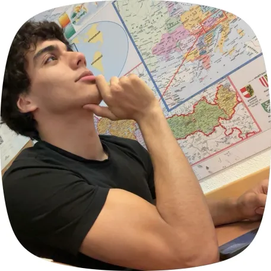
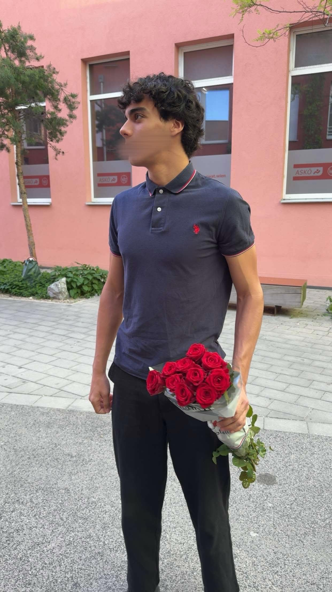
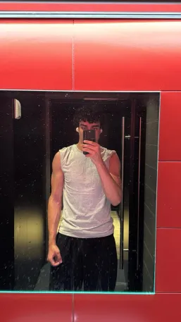

1. Arbeitsstunde:
Aufgaben: Besichtigung des Materials, Auswahl der Aufgaben Ziele für
nächste Woche (22.04.): Auswahl der Aufgaben
2. Arbeitsstunde:
Ziele der Stunde (22.04): Entwicklung eines DDOS-Modells Aufgaben:
Recherche über DDOS-Angriffe, Festlegung des Gruppennamens, Entwicklung
des Codes Ziele für nächste Woche (29.04): Testung der Modells,
3. Arbeitsstunde:
Ziele der Stunde (29.04): Fertigstellung des DDOS-Modells, Testung des
Modells Aufgaben: Schreiben des DDOS-Modells in anderer Sprache Ziele
für nächste Woche (06.05): Komplette Übersetzung des Codes
4. Arbeitsstunde:
Ziele der Stunde : Beginnen mit der Umschreibung des Codes Aufgaben:
Umschreiben des Codes Ziele für nächste Woche (06.05): Komplette
Übersetzung des Codes

1. Arbeitsstunde: Aufgaben: Besichtigung des Materials, Auswahl der Aufgaben Ziele für nächste Woche (22.04.): Auswahl der Aufgaben
2. Arbeitsstunde: Ziele der Stunde (22.04): Entwicklung eines DDOS-Modells Aufgaben: Entwicklung der Codes, Festlegung des Gruppennamens Ziele für nächste Woche (29.04): Testung der Modells,
3. Arbeitsstunde: Ziele der Stunde (29.04): Fertigstellung des DDOS-Modells, Testung des Modells Aufgaben: Schreiben des DDOS-Modells in anderer Sprache Ziele für nächste Woche (06.05): Komplette Übersetzung des Codes
4. Arbeitsstunde: Ziele der Stunde : Beginnen mit der Umschreibung des Codes Aufgaben: Umschreiben des Codes Ziele für nächste Woche (06.05): Komplette Übersetzung des Codes

1. Arbeitsstunde: Aufgaben: Besichtigung des Materials, Auswahl der Aufgaben Ziele für nächste Woche (22.04.): Auswahl der Aufgaben
2. Arbeitsstunde: Ziele der Stunde (22.04): Anfangen mit der Dokumentation Aufgaben: Umfangreiche Dokumentation, Unterstützen der Gruppenmitglieder, Festlegung des Gruppennamens Ziele für nächste Woche (29.04): Testung der Modells, Dokumentation
3. Arbeitsstunde: Ziele der Stunde : Fertigstellung des DDOS-Modells, Testung des Modells Aufgaben: Schreiben des DDOS-Modells in anderer Sprache Ziele für nächste Woche (06.05): Komplette Übersetzung des Codes
4. Arbeitsstunde: Ziele der Stunde : Beginnen mit der Umschreibung des Codes Aufgaben: Umschreiben des Codes Ziele für nächste Woche (06.05): Komplette Übersetzung des Codes
Festgelegte Aufgaben: Blaue Aufgaben: Domain Name System (DNS), Rote Aufgabe: Distributed Denial of Service (DDOS), Gelbe Aufgaben: Firewall
Jakob PC:
Erklärung DDOS-Modell: ...
Code DDOS-Modell:
from calliopemini import *
import radio
radio.config(group=20, power=7)
x = True
while x:
radio.on()
radio.send('Felix in Deutschland')
Bao Pc:
from calliopemini import *
import radio
radio.config(group=20, power=4)
x = True
while x:
radio.on()
radio.send('Niklas in Rumänien')
sleep(2000)
Niklas PC:
from calliopemini import *
import radio
# Code in a 'while True:' loop repeats forever
radio.config(group=20)
radio.on()
info = radio.receive('Niklas in Rumänien')
if info:
while True:
display.show(Image.HEART)
sleep(1000)
display.clear()
# Testung des Modells fehlgeschlagen, da Calliope Verbindungsprobleme hat
#Code unnötig: Sprache funktioniert nicht
#Code muss in neue Sprache übersetzt werden
Falscher Code:
Jakob PC:
radio.set_transmit_power(7)
radio.set_group(20)
x = True
while x:
radio.send_string("Felix in Deutschland")
Bao PC:
radio.set_transmit_power(4)
radio.set_group(20)
x = True
while x:
radio.send_string("Niklas in Rumänien")
control.wait_micros(1000000)
radio.set_group(3)
code 1:
x = True
while x:
radio.send_number(0)
basic.show_number(0)
radio.set_group(3)
radio.set_transmit_power(4)
Jakob PC:
radio.set_group(164)
radio.set_transmit_power(7)
basic.show_icon(IconNames.GHOST)
def on_forever():
radio.send_number(2)
basic.forever(on_forever)
Niklas PC:
def on_received_number(receivedNumber):
if receivedNumber == 0:
basic.show_string("i")
else:
basic.show_string("Error")
radio.on_received_number(on_received_number)
basic.show_string("hi!")
radio.set_group(164)
Bao PC:
radio.set_group(164)
radio.set_transmit_power(4)
basic.show_icon(IconNames.HAPPY)
def on_forever():
radio.send_number(0)
basic.pause(100)
basic.forever(on_forever)
radio.set_group(164)
radio.set_transmit_power(7)
basic.show_icon(IconNames.GHOST)
def on_forever(): radio.send_number(2)
basic.forever(on_forever)
def on_received_number(receivedNumber):
if receivedNumber != 0:
basic.show_leds("""
. . . . .
# . . . #
. . . . .
. # # # .
# . . . #
""")
radio.send_string("Bao in Vietnam")
else:
basic.show_string("Sicher")
radio.on_received_number(on_received_number)
radio.set_group(24)
radio.set_transmit_power(7)
def on_received_number(receivedNumber):
if receivedNumber != 0:
basic.show_string("Error")
else:
basic.show_icon(IconNames.HAPPY)
radio.on_received_number(on_received_number)
def on_received_string(receivedString):
if receivedString == "Bao in Vietnam":
radio.set_group(270)
radio.on_received_string(on_received_string)
basic.show_string("hi!")
radio.set_group(24)
def on_forever():
basic.show_string("hi!")
radio.set_group(40)
radio.send_string("HALLO")
basic.show_string("senden")
basic.forever(on_forever)
def on_received_number(receivedNumber):
global x
basic.show_icon(IconNames.GIRAFFE)
if receivedNumber == 40:
x += 1
radio.set_group(receivedNumber)
basic.show_number(receivedNumber)
radio.on_received_number(on_received_number)
def on_received_string(receivedString):
basic.show_string(receivedString)
radio.on_received_string(on_received_string)
x = 0
radio.set_group(30)
radio.set_transmit_power(7)
basic.show_string("hi!")
def on_forever():
if x == 0:
radio.send_string("n")
basic.forever(on_forever)
def on_received_string(receivedString):
global y
if receivedString == "n":
basic.show_string("e")
y += 1
basic.show_string("sendet")
radio.on_received_string(on_received_string)
y = 0
radio.set_group(30)
basic.show_string("hi!")
radio.set_transmit_power(7)
def on_forever():
if y == 1:
radio.send_number(40)
basic.forever(on_forever)